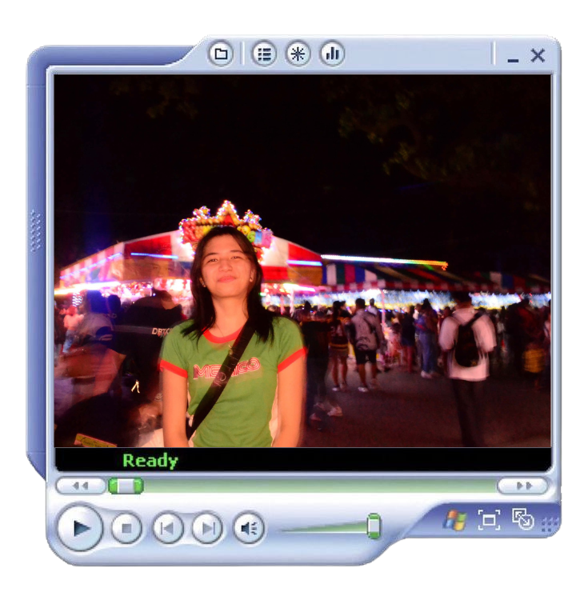
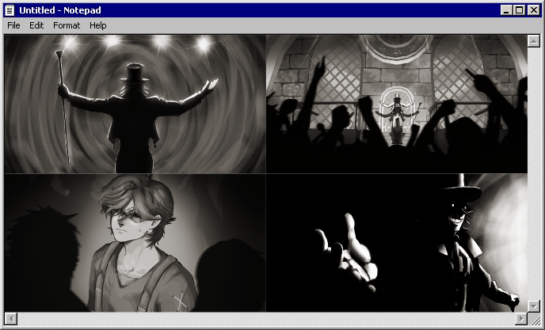

Hey there! You can call me Maui or Mags. I’m an aspiring multimedia artist on an exciting journey in the Multimedia Studies program from the University of the Philippines Open University. My mission is to showcase my skills and sprinkle some artistic magic into the world!
As a budding artist, I’m all about inspiring others and diving into a whirlwind of ideas across various art styles. I want to explore what it really means to be an artist and share the wonder that comes with it.
As a person, I am somewhat laid-back, nocturnal, and quite outgoing. People often describe me as a jolly person. I might even make a good performer for the Jollibee mascot—if I could dance! Besides that, I may have a sense of humor that can be hit or miss, but I persevere in many things, even when they are scary for me.

Things I Love...
1. Drawing
From hobbies to school organizations I joined, they all have one thing in common: art. It’s been one of my favourite things to do as a kid, until I grew up. I have recently graduated from the Arts and Design track in my senior high school. During my time there, I joined two art organizations at UP. And currently, I also collaborate with a friend to illustrate game projects. I plan to continue pursuing my passion for drawing in the future by sharing my love, creativity, and enthusiasm for art with others. I want to contribute to the art community and, along the way, inspire others to persevere and strive for their own artistic goals.
2. Watching Videos/Films
It wasn’t until recently that I started to really appreciate videos and films. Whether it's social media, short films, series, or movies, they have meaning and purpose. Watching them also inspires me to create art with meaning, and if it doesn’t hit? Maybe those who may find my art give it their own meaning/interpretations. My recent hyperfixations and inspirations lately are:
- The Hunger Games
- Lord of The Rings
- ERSATZ
- Hermitcraft
3. Gaming
I always loved playing games, especially with friends. But due to time and personal life, I have to manage my time for when I am able to play. Lately, I’ve been into games in the survival genre, such as:
- Minecraft
- Don't Starve Together
But I also want to immerse myself in narrative-driven games to appreciate their stories and also to find inspiration.
- Fears to Fathom
- Mouthwashing
- Still Wakes The Deep
4. Music
I like listening to music, especially when I'm working on art or doing some tasks. It helps me focus and get into the right mindset. Lately I've been into modern and alternative pop music like:
- Malcolm Todd
- Olivia Rodrigo
But overall, I listen to random songs that catch my attention.
Aside from that, I returned to learning the guitar, teaching myself this time. I used to play it in elementary school for music class, but I've forgotten the basics. What inspired me to pick it up again is a specific song I want to learn: "Iris" by the Goo Goo Dolls.
5. Taking Walks
It helps calm the mind when thoughts get too loud in the head. (It’s also more fun with company)
6. Foods
I like eating and trying new foods. Especially going to cafes to see if my favourite drink is available and what it tastes like. Some of my favorite foods are:
- Pizza
- Cheeseburger (with pickles)
- Sushi
- Cookies and Cream desserts
- Milk Tea
- Anything Potatoes
Passion Project

I currently have some passion projects that I am working on, which is to illustrate for game projects a friend of mine started. I am excited to see how the projects will develop and what we can create together. It is a great opportunity for me to apply my artistic skills and learn more about the game development process.
Here are the games I am currently working on: